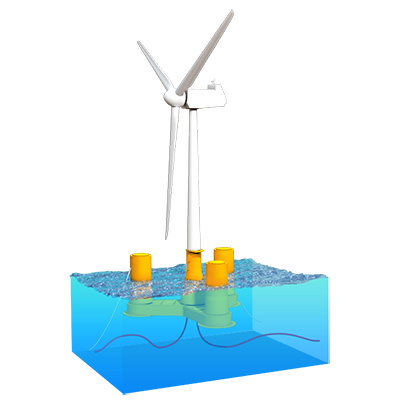

Iberdrola es la energética privada que más invierte en I+D+i en el mundo. La Innovación es una variable estratégica que afecta a todos los negocios y actividades que desarrollamos.
Más de 125 millones de inversión en Innovación a través de nuestra carretera de start-ups
Invertimos para crear un nuevo modelo de proyectos de soporte a la electrificación
Realizamos más de 25 pruebas piloto de nuevas tecnologías al año como puerta para establecer colaboraciones